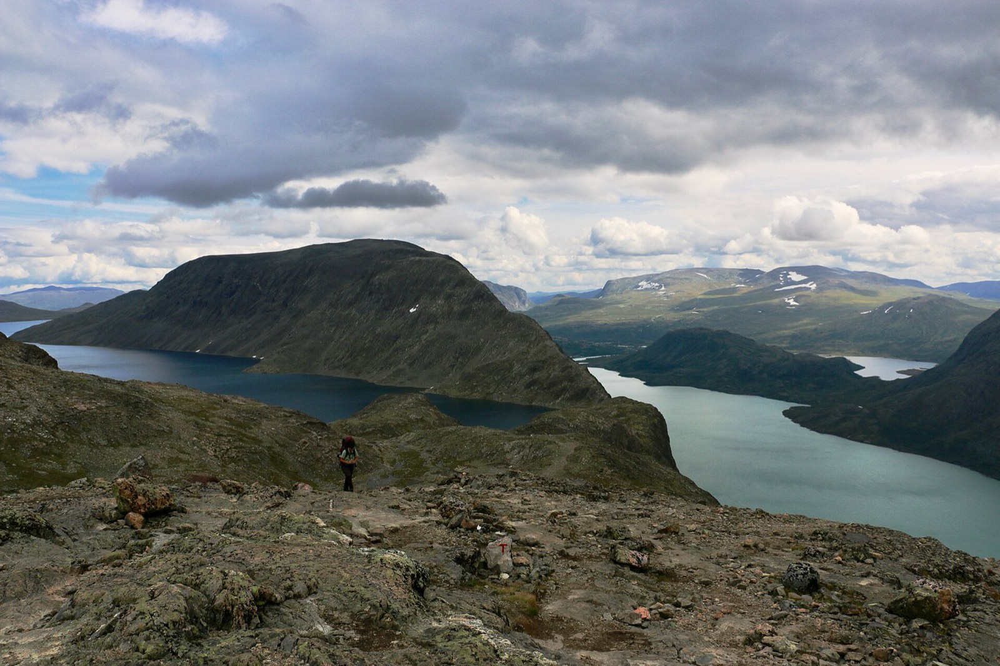
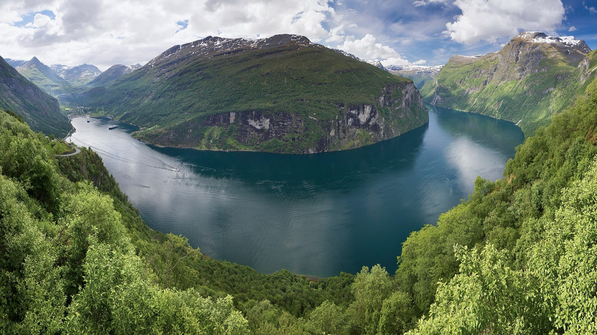

Norway in August
Two ways to spend August 7–20, 2027. Both include a few easy evenings on trout and grayling rivers, and both plan for one vegetarian and no fishing guides. Pick the one that fits how you want to travel.

Huts & Trout
Walk hut to hut through Rondane and Jotunheimen, sleep in staffed lodges, and fish on the rest days in between.

Roads & Trout
Drive from Oslo to Trondheim with day hikes from a few valley bases, a mountain road to the fjords, and no huts.
Photos: Silverkey (CC BY-SA 4.0) and Ximonic (CC BY-SA 3.0), from Wikimedia Commons. Back to extra-ransom.net